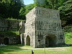
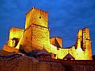
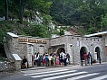
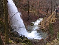
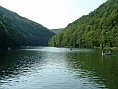
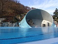
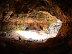
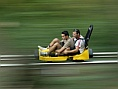

Látnivalók és Programok a Közelben
- Hámori Mászópark, Kohászati Múzeum, Szeleta-barlang, Miskolci Állatkert: Fedezze fel a környék kalandparkját és múzeumait!


- Diósgyőri vár és várfürdő, lillafüredi pisztrángos, Újmassai őskohó, Szentléleki pálos kolostorrom: Történelmi látnivalók és természeti csodák.


- Látnivalók Lillafüreden (1 km): Hámori tó, Palotaszálló, Szinva-patak vízesés, Anna-mésztufabarlang, Szent István-cseppkőbarlang, erdei kisvasút.


- Miskolc-Tapolca (17 km): Barlangfürdő, bobpálya, kalandtúrapark, csónakázó tó és park.


- Miskolc.hu - Miskolc látnivalói